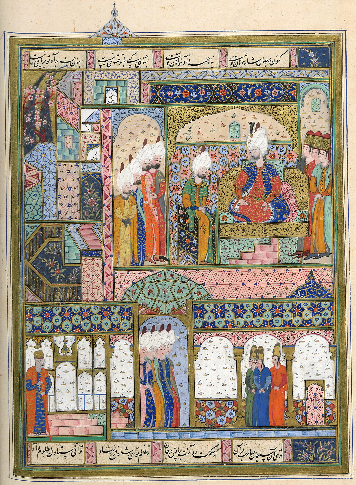
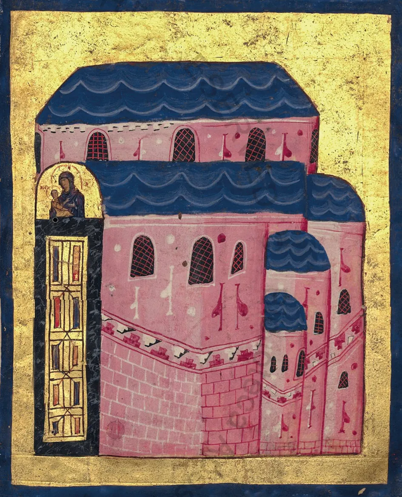
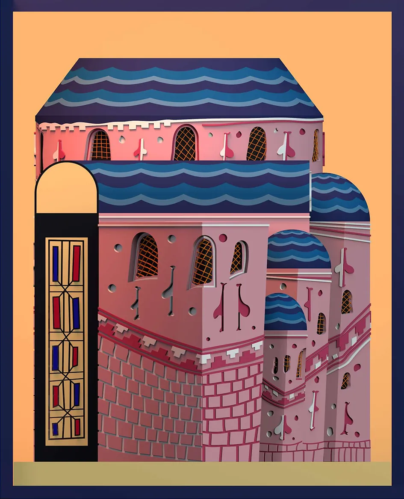
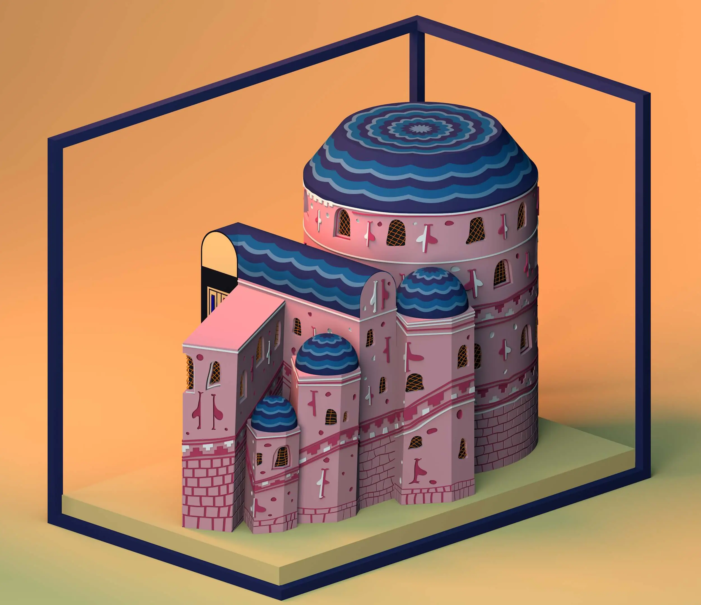
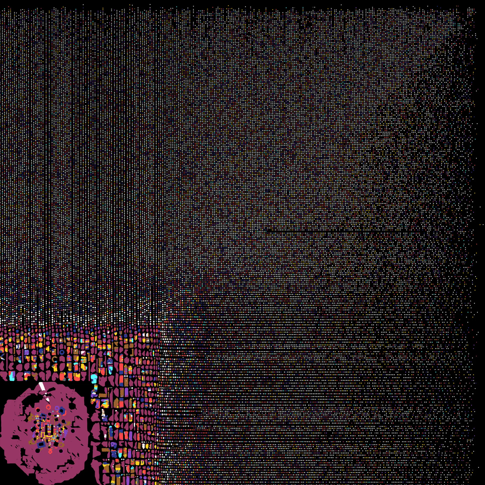
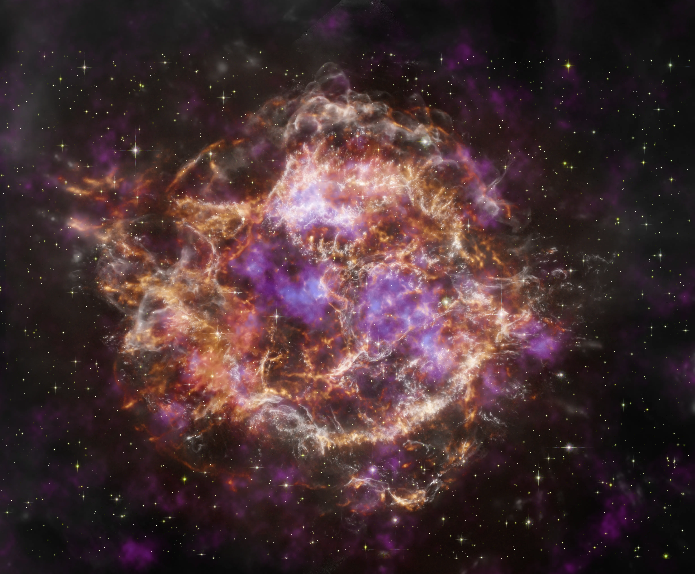
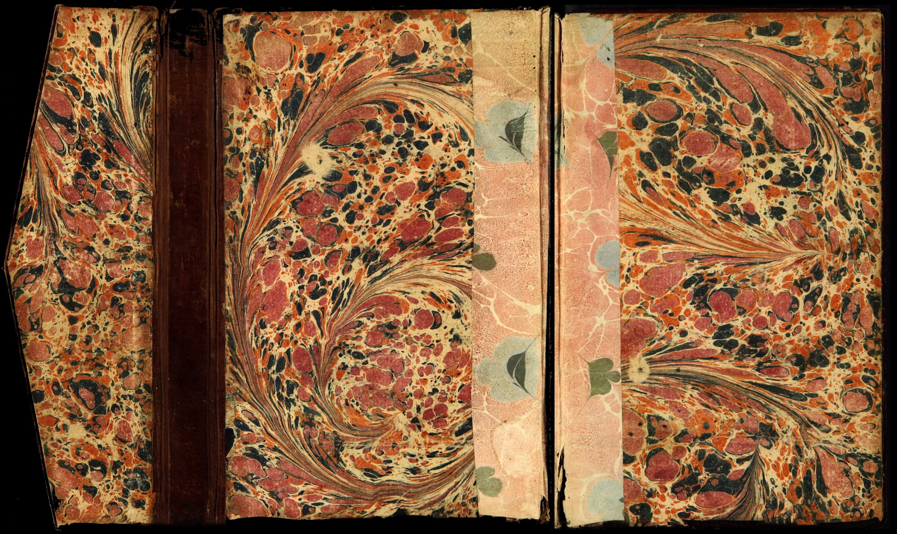
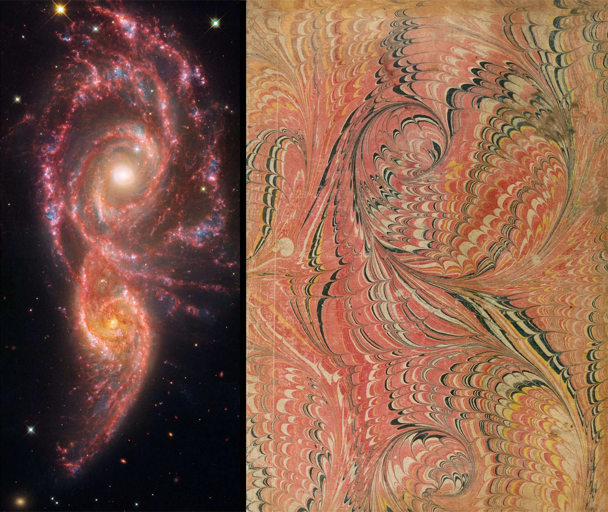
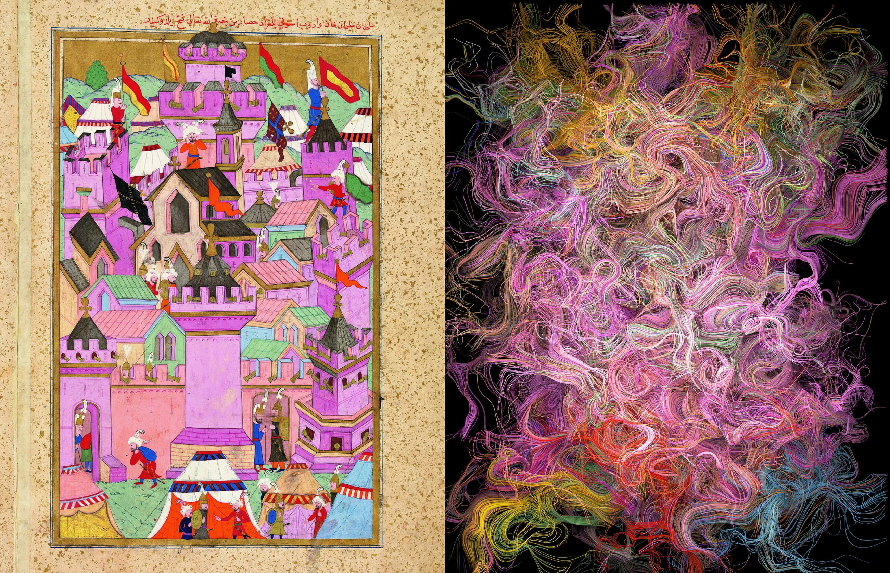
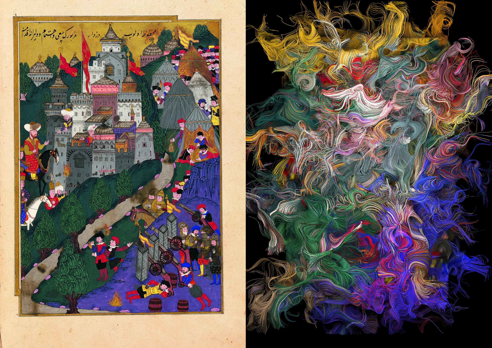

In the Turkish miniature, the world was seen through a gemmed eye that crystallized all it perceived. If the
Italian
painter held a mirror to nature, the miniaturist held it to the stars, imagining artistic creation as
reflections across
a series of mirrors between the heavens and the painter’s mind. By sprinkling gold and polishing pigments,
they
simulated images of pure light. Long before the transition from pigments to pixels, they had already created
luminous
images freed from material gravity. These colors without substance functioned as proto-pixels. The radiant
folio,
conceived as a polished mirror, anticipates the digital screen. Our images were once carried by angelic light,
now by
electronic currents.

A kaleidoscopic vision of Topkapı Palace seen through crystal eyes. The miniature depicts the reception of the
Safavid
Prince Elkas Mirza by Sultan Süleyman the Magnificent in the Reception Hall. The painter fragments
architectural space
into a spectacle of radiant surfaces, transforming it into a turbulent surface of colors, patterns, and
ornamental
rhythms. From the Süleymannâme (Book of Süleyman), composed by Arifi Çelebi, illustrated by an
anonymous court artist.
Constantinople, 1561. Topkapı Palace Museum Library, H.1517, folio 471b.
The Seal of Mani
This vision was initiated by Mani, the third-century “Messenger of Light,” whose illustrated manuscripts once
defined
artistic excellence along the Silk Road. Mani imagined the universe as a struggle between an angelic world of
light and
a material world of darkness. His paintings construct a realm of pure radiance, a space without depth, weight,
or
shadow. At the center of this vision lies the principle of iridescence, expressed through the figure of the
chameleon.


3D reconstructionSource Miniature
3D reconstruction of a Byzantine church miniature, Mete Kutlu, 2020. Frontispiece miniature from the
Lectionary
120, Constantinople, 11th century, Vatican Apostolic Library, Vat. gr. 1156, fol. 1r. The
reconstruction is based on descriptive geometry. It
preserves the
spatial contradictions of the original rather than correcting them. It explores an algorithmic "reverse
perspective", rendering the
apophatic vision in pixels.

Unseen corners of a Byzantine church miniature, Mete Kutlu, 2020. The 3D reconstruction allows to see the same
monument from different angles. Rather than
following a regular geometric plan, the church emerges as a living organism with spontaneous accumulation of
volumes.
Based on the frontispiece miniature of the Lectionary 120, Constantinople, 11th century. Vatican Apostolic
Library, Vat.
gr. 1156, fol. 1r, Vatican City.
Magnetic Icons
The Ottomans blended this shimmering vision with the jeweled aesthetics of Byzantium. By connecting the
archives of
Venice with the collections of Topkapı Palace, this research reveals previously overlooked artistic exchanges.
Through
3D reconstructions, I analyze how pneuma, the divine breath, produces spatial anomalies in miniature painting.
This
force appears as the chaotic veining of marble, the shifting colors of buildings, or their radical
distortions. By
reconstructing the “impossible” columns of the Temple of Solomon in 3D, I demonstrate how painters bent space
itself to
render the invisible presence of the spirit visible.

A computational map of an imaginary Constantinople, Mete Kutlu, 2023. The city dissolves into an algorithmic
constellation. The pixel becomes the universal building block of a world without hierarchy, each unit
corresponding to a
fragment of monument, street, or terrain. As contemporary urban environments become increasingly organized
through
artificial intelligence, their generated maps often exceed human comprehension. The city emerges as an alien
landscape
whose logic remains opaque, revealing the black box of the algorithm. Generated in Blender using Smart UV
mapping, based
on the miniature of Constantinople (c. 1610) in The Key to All Prophecies (Tercüme-i Miftah-i
Cifr’ül Cami) by
Abdurrahman Bistami, the Antiochian scholar of eschatology and the science of letters. Istanbul University
Rare Books
Library, T6624, folio 80.
Born in Clouds
Whether in virtual worlds, mythology, or modern cosmology, structured universes emerge from amorphous clouds.
At the
origin of Ottoman architecture stands the primordial storm of creation, where vapors and winds condense into
planets and
stars. Modern astrophysics proposes a similar turbulent narrative through cosmic radiation and nebular
formation. In
digital culture we likewise generate virtual worlds from algorithmic clouds known as noise textures. Through
immersive
experiments with miniature painting, this research explores a collaboration with algorithms that often exceed
human
understanding. The result is a form of design beyond intelligence, where we work with patterns governed by
logics
different from our own.

The expanding debris cloud of Cassiopeia A, the remnant of a massive star that exploded roughly 340 years ago
in the
constellation Cassiopeia, about 11,000 light-years from Earth. In this turbulent cloud, the life cycle of
stars
becomes
visible: nebulae collapse into stars, stars forge the elements of planets and life, and supernova explosions
return
this
matter to the interstellar medium, where new clouds and new stars will form. Composite image using data from
NASA’s Chandra X-ray Observatory, the Hubble Space Telescope, the James Webb Space
Telescope, NuSTAR, and the Spitzer Space Telescope, released in 2025.
Cosmic Colors
Artificial intelligence revives the sense of enigma that the medieval eye once perceived in nature.
Computational
complexity produces a “black box” effect in which we interact with visual systems that resist complete
interpretation.
Using noise-based simulations, I transform miniature paintings into algorithmic clouds of color. These works
draw on
Brownian motion, the random movement of microscopic particles described by Einstein, to simulate a cloud
chamber. Once
the painter captured celestial colors from an imaginary cloud, now the astrophysicist captures cosmic
radiation within
physical cloud chambers.

A cosmic cloud over the Garden of Eden, clouded flyleaf, Hadikatü’s-süadâ (Garden of the
Blessed), Fuzuli, from the library of Yusuf Sinan Pasha, the Sicilian grand vizir of the Ottomans,
Constantinople, second half of the sixteenth century, University of Michigan Archives.
Galaxies of Pigments
Painting, Sufism, and astronomy formed the three lenses through which Turkish courts explored the cosmos. All
sought to
extend human vision and reveal the invisible. Centuries before the telescope, Persian astronomers identified
distant
galaxies and described them as “little clouds.” To explore these celestial clouds, Timurid artists developed
clouded
papers (kaghaz-i abri), creating colorful whirlpools by sprinkling pigments across water. These
swirling
forms, captured
through imagined mirror systems, closely resemble the galaxies now revealed by space telescopes such as the
James Webb.
First came artistic vision and mystical imagination. Technology followed.
Algorithmic Sandstorms
Like the artists of the Silk Road, we now use fluid dynamics to visualize the undecipherable complexity of
the cloud.
This reflects a transformation in the location of wonder. Awe has shifted from the unknowable deity to the
unknowable
machine. Particle simulations known as sandograms replace holograms, expressing a new embodied virtuality
where data
becomes material. Derived from computational models originally developed to simulate atomic shockwaves and
galactic
formation, sandograms visualize the tension between algorithmic prediction and human freedom. Popularized in
science
fiction such as Foundation and Dune, they revive ancient traditions of divining the future through sand. These
simulations become the intuitive language of science in an age of post-intelligence, where data is no longer
merely seen
but experienced as a physical force.

Before the telescope, artists across the Silk Road developed the art of paper clouding that offered
speculative, close-up visions of distant cosmic phenomena. Remarkably, these crafted intuitions resonate with
contemporary deep-space imagery.
Diptych: Collision of the spiral galaxies IC 2163 and NGC 2207, constellation Canis Major, approximately 114
million light-years from Earth, James Webb Space Telescope and Hubble Space Telescope, released 31 October
2024.
Alongside: a marbled paper vortex from the extraordinary star catalogue of the Timurid astronomer-prince Ulugh
Beg, Zij-i Gürkani (Astronomical Tables of Ulugh Beg), first compiled 1437, Timurid
Samarkand. Seventeenth-century Ottoman copy, Bibliothèque nationale de France, Paris, BNF Persan 164, upper
flyleaf.
A turbulence at the edge of the universe.Whirling waters, dancing colors.In the clouder’s hand,the world becomes a charming mirage.Each grain of pigment isan atom, a planet, a blazing starcaught in a cosmic storm.
Listen to a chapter excerpt
A short reading from Chapter 17
Galaxies of Pigments
0:00 / 0:00
Cloud gathers into star.Star dissolves into cloud.From this furnace, life unfolds.Between vapor and form,Between potential and choice.

Pigment radiation in Székesfehérvár, Mete Kutlu, 2022. Conquest of Székesfehérvár (Hungary) in 1543,
from Hünernâme II (The Book of
Talents II), written by Seyyid Lokman
in Constantinople, 1588. Topkapı Palace Museum Library, H.1524, fol. 268b.

Pigment radiation in Nicopolis, Mete Kutlu, 2022. Cloud and particle simulations with noise textures
on an Ottoman
miniature. Battle of Nicopolis (Bulgaria), from The Book of Talents I (Hünernâme I) written
by Seyyid Lokman in
Constantinople, 1584. Topkapi Palace Museum Library, H.1523, folio 108b.
Contents
BOOK III
Pigment Turbulence
Iridescent Worlds within Clouds
Digital Media: Particle Systems and Fluid Dynamics
Artisanal Media: Silk Road Miniatures
12
Jewel Eye
Crystallizing the World in Kaleidoscopic Images
13
The Seal of Mani
Iridescent Colors as Proto-Pixels
14
Magnetic Icons
Enigma, Pneuma and Spatial Distortions
15
Born in Clouds
World-Making in Myths, Simulations & Cosmology
16
Cosmic Colors
From Pigment Radiation to Pixel Storms
17
Galaxies of Pigments
Dreaming the Cosmos through Clouded Papers
Bibliothèque nationale de France, Paris & Topkapı Palace Museum Library,
Istanbul
18
Algorithmic Sand Storms
From the Science of the Sand to Galactic Prophecies
A Look inside the Book
Selected spreads from the printed prototype. Click to enlarge.